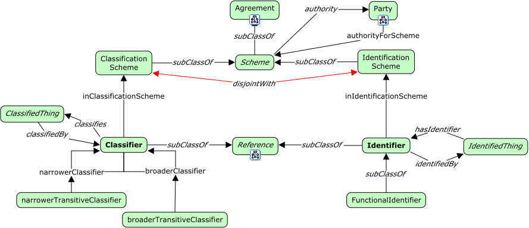

Identity Aspects

Identity Aspects
Classes
Classification scheme
Definition:
A classification scheme names and provides a scope for a set of classifiers.
OWL:
fnd:ClassificationScheme a rdfs:Class ;
rdfs:subClassOf fnd:Scheme ;
skos:prefLabel "Classification scheme"@en ;
skos:definition "..."@en .
Classifier
Definition:
A classifier
OWL:
fnd:Classifier a rdfs:Class ;
rdfs:subClassOf fnd:Reference ;
skos:prefLabel "Classifier"@en ;
skos:definition "..."@en .
Functional identifier
Definition:
TBD
OWL:
fnd:FunctionalIdentifier a rdfs:Class ;
rdfs:subClassOf fnd:Identifier ;
skos:prefLabel "Functional identifier"@en ;
skos:definition ""@en .
Identification scheme
Definition:
An identification scheme names and provides a scope for a set of identifiers.
OWL:
fnd:IdentificationScheme a rdfs:Class ;
rdfs:subClassOf fnd:Scheme ;
skos:prefLabel "Identification scheme"@en ;
skos:definition "..."@en .
Identifier
Definition:
TBD
OWL:
fnd:Identifier a rdfs:Class ;
rdfs:subClassOf fnd:Reference ;
skos:prefLabel "Identifier"@en ;
skos:definition ""@en .
Scheme
Definition:
A scheme is an agreement to use a common format, a common style or namespace.
Examples:
- The GS1 Global Trade Identification Number (GTIN).
- The International Standard Book Number (ISBN).
OWL:
fnd:Scheme a rdfs:Class ;
rdfs:subClassOf fnd:Agreement ;
skos:prefLabel "Scheme"@en ;
skos:definition "..."@en ;
skos:example "...".
Properties
authority
Definition:
Denotes that one party in the agreement constituting the scheme is the authority for the scheme and responsible for setting rules and arbitrating issues.
Example:
- The GTIN scheme has the organization GS1 as it's authority.
gtin: :authority gs1: .
OWL:
fnd:authority a rdfs:Property ;
rdfs:subPropertyOf fnd:includesParty ;
owl:inversOf fnd:authorityForScheme ;
rdfs:domain fnd:Scheme ;
rdfs:range fnd:Party ;
skos:prefLabel "authority"@en ;
skos:definition "..."@en .
authority for scheme
Definition:
...
Example:
- GS1 is the authority for the GTIN scheme.
gs1: :authorityForScheme gtin: .
OWL:
fnd:authorityForScheme a rdfs:Property ;
rdfs:subPropertyOf fnd:aPartyTo ;
owl:inversOf fnd:authority ;
rdfs:domain fnd:Party ;
rdfs:range fnd:Scheme ;
skos:prefLabel "authority for scheme"@en ;
skos:definition ""@en .
broader classifier
Definition:
TBD
Example:
- Toy is a broader classifier than building bricks.
- Furniture is a broader classifier than chairs.
OWL:
fnd:broaderClassifier a rdfs:Property ;
owl:inverseOf fnd:narrowerClassifier ;
rdfs:domain fnd:Classifier ;
rdfs:range fnd:Classifier ;
skos:prefLabel "broader classifier"@en ;
skos:definition ""@en .
broader transitive classifier
Definition:
TBD
Example:
- If building bricks is a broader classifier than Legos.
- If toys is a broader classifier than building bricks.
- Then, transitively, toys is a broader classifier that Legos.
OWL:
fnd:broaderTransitiveClassifier a owl:TransitiveProperty ;
owl:inverseOf fnd:narrowerTransitiveClassifier ;
rdfs:domain fnd:Classifier ;
rdfs:range fnd:Classifier ;
skos:prefLabel "broader transitive classifier"@en ;
skos:definition ""@en .
in classification scheme
Definition:
TBD
OWL:
fnd:inClassificationScheme a rdfs:Property ;
rdfs:domain fnd:Classifier ;
rdfs:range fnd:ClassificationScheme ;
skos:prefLabel "in classification scheme"@en ;
skos:definition ""@en .
in identification scheme
Definition:
TBD
Example:
- If building bricks is a broader classifier than Legos, and toys is a broader classifier than building bricks, then toys is a broader classifier than Legos.
OWL:
fnd:inIdentificationScheme a rdfs:Property ;
rdfs:domain fnd:Identifier ;
rdfs:range fnd:IdentificationScheme ;
skos:prefLabel "in identification scheme"@en ;
skos:definition ""@en ;
skos:example "..."@en .
narrower classifier
Definition:
TBD
Example:
- Building bricks is a narrower classifier than toys.
ex:BuildingBricks :narrowerClassifier ex:Toys . - Chairs is a narrower classifier than furniture.
ex:Chairs :narrowerClassifier ex:Furniture .
OWL:
fnd:narrowerClassifier a rdfs:Property ;
owl:inverseOf fnd:broaderClassifier ;
rdfs:domain fnd:Classifier ;
rdfs:range fnd:Classifier ;
skos:prefLabel "narrower classifier"@en ;
skos:definition ""@en ;
skos:example "..." .
narrower transitive classifier
Definition:
TBD
OWL:
fnd:narrowerTransitiveClassifier a owl:TransitiveProperty ;
owl:inverseOf fnd:broaderTransitiveClassifier ;
rdfs:domain fnd:Classifier ;
rdfs:range fnd:Classifier ;
skos:prefLabel "narrower transitive classifier"@en ;
skos:definition ""@en .